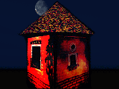

| Sucedió de repente el último verano. En el Talleur de La Literature de LA FATTORÍA los sueños húmedos se materializaron en prosas y poesías y ahora los ensayos y novelas se ejecutan con imparable rapidez. Un desbordamiento de creatividad e inventiva al servicio de señoras. Si quieres pasar un buen rato entre caballeros andantes y playmates, sheriffs y arlequines, tómate una tila y prepárate para disfrutar de este humilde Teatro Al Aire Libre. |
 |